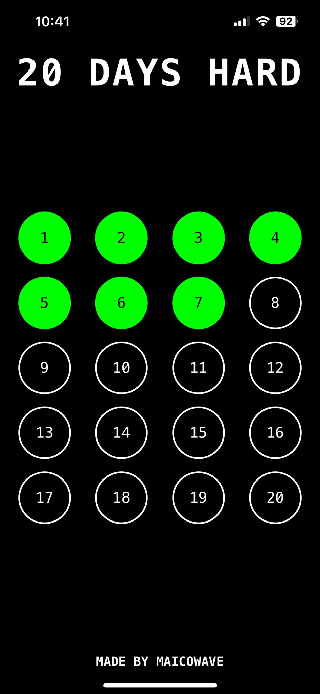
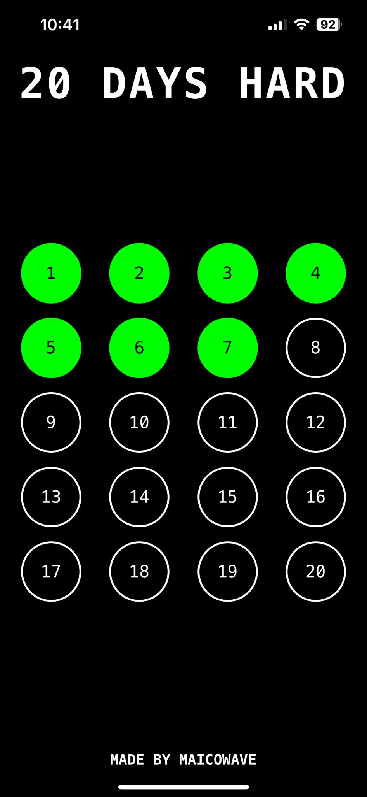

20 Days Hard
Update – 19/11/2025: A minimal personal web app to track a 20-day challenge.
This is an early version. You might find small bugs, let me know and I’ll fix
them.
Intro
I didn’t want anything fancy. All those 75 Hard apps were full of ads, subscriptions, and pointless gamification. I thought, “No, this has to be simple.” Just a way to track 20 days and stay accountable. Purely visual, minimal, and mobile-friendly.
I started this 20-day challenge myself. Once I complete it, I plan to make a bigger version for the full 75 Hard - if I manage it ;-)
This project is inspired by my previous habit widget ideas. It’s simple, lightweight, and keeps me consistent.
Set Up
- Click 20DAYSHARD on Iphone
- Tap the Share button (square with an arrow)
- Select Add to Home Screen
- Give it a name like "20DaysHard" and tap Add
- The app now opens fullscreen like a native app
This way, you can use it just like an app, without scrolling, ads, or subscriptions.
What It Shows
- 20 circles representing 20 days
- Click a circle to see daily tasks
- Check off tasks one by one
- Circle turns green when all tasks are completed
- Progress saved automatically in localStorage
How It Works
Open the app in your browser, click a day, and check off each task. Everything saves locally. No forms, no logging, no syncing.
How to use
- Open the app in your browser
- Click on a day to see tasks
- Check off each task as you complete it
- Progress is automatically saved
Purpose
Not fancy. Not polished. Just a small tool to keep you consistent for 20 days. Completing it gives you a sense of what the next level, like 75 Hard, looks like.
— Maico Minne. Written 19/11/2025
 
